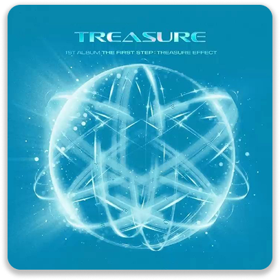
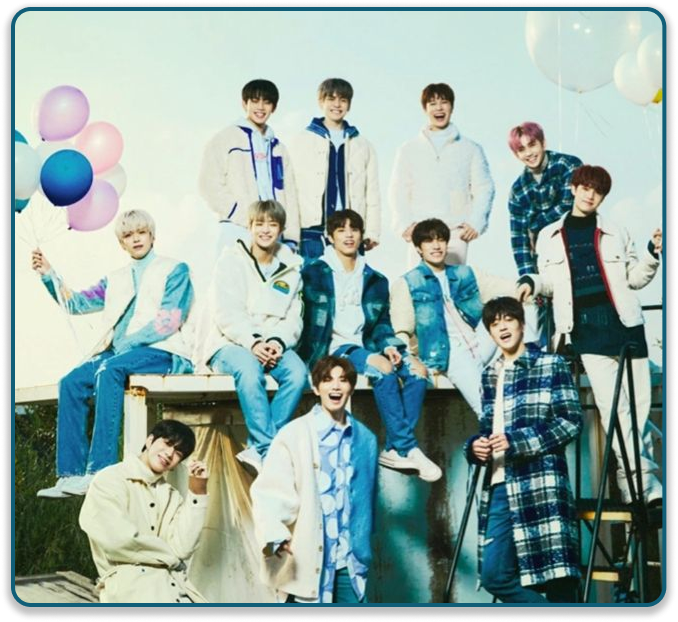
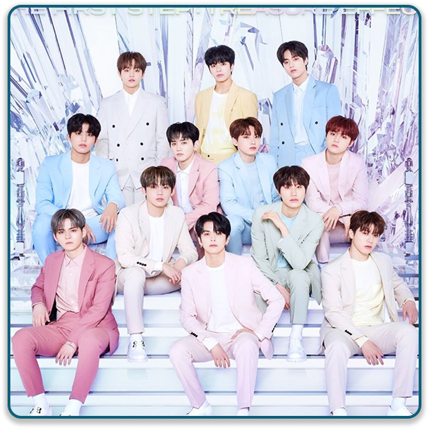

THE FIRST STEP:
TREASURE EFFECT
Songs:
- MY TREASURE
- BE WITH ME
- SLOWMOTION
The First Step: Treasure Effect is the fourth and final instalment of The First Step series, following the group's single albums The First Step: Chapter One, The First Step: Chapter Two and The First Step: Chapter Three all released in 2020. All of this 3 single album songs appear on The First Step: Treasure Effect, along with the group's pre-debut song "Going Crazy".
On December 28, 2020, YG Entertainment uploaded a teaser poster through their official platform which is YouTube, Instagram and X (Twitter), confirming the title and release date of the album. On December 31, Treasure released the title poster for their album, revealing that the lead single is named “My Treasure”. YG Entertainment explained that the lyrics of "My Treasure" contain meaning that everyone is a unique treasure-like being, which gives a hopeful message of “Let's cheer up in hard times the sun will rise and shine again tomorrow” and added through the song “My Treasure”, they hope that the fans who have been supporting Treasure and people out there suffering will be consoled. YG further described "My Treasure" as a "bright and exciting pop song" that will cheer up the listeners and make them feel better in these hard times.
During the online press conference held by Treasure for the release of The First Step: Treasure Effect, the group described "My Treasure" as a song carrying the message that we are all treasure-like beings. The intro piano melody and brass sounds create a harmony, making a cheerful mood. “Slowmotion” written and composed by AKMU's Lee Chanhyuk. It was calmly progresses while incorporating bass and piano, expressing the theme of let's go through this harsh world together while holding hands, slow but steady. "Be with Me" is a song with "whispers saying you should be with me together", and "Orange" is a song with "a retro vibe that sounds familiar yet fresh"
Their title track “My Treasure” was released on January 11, 2021. In celebration of their comeback, the group held an online press conference 2 hours before the release to talk about the album.
PHOTOS

